Internal representation
Understand how models encode knowledge, retrieved evidence, source provenance, conflict, and hallucination risk through white-box monitoring and hidden-state analysis.
Bio. I am a Research Assistant at the Hong Kong University of Science and Technology (Guangzhou), advised by Prof. Chengwei Qin. I am also a Research Intern at the Binjiang Institute of Zhejiang University (IFRC Lab), working on trustworthy language models with Dr. Meng Han and Dr. Wenpeng Xing. I am pursuing a B.Eng. in Artificial Intelligence at the Communication University of Zhejiang.
Research. From latent knowledge to reliable action, memory, and verifiable trust. I study how models internally represent knowledge, evidence provenance, conflict, and risk; why those signals fail to guide generation, tool use, and memory; and how monitoring, system safeguards, and verification can make AI systems more reliable.
Trustworthy agents must not only represent provenance, conflict, and risk internally. These signals should reliably inform what agents say, do, remember, reuse, and learn, while the resulting models and artifacts remain externally verifiable.
Understand how models encode knowledge, retrieved evidence, source provenance, conflict, and hallucination risk through white-box monitoring and hidden-state analysis.
Study why decodable safety signals fail to guide generation, tool use, and memory updates, and turn monitoring into reliable system safeguards.
Build accountable deployment mechanisms through information-flow control, model fingerprinting, blockchain, and privacy-preserving verification.
My longer-term goal is to understand environment–verifier–memory co-evolution in lifelong agents: how tasks, evaluation, memory, and oversight should adapt together as agents act, learn, and update over time.
* Equal contribution. Review statuses are a snapshot dated August 2, 2026.
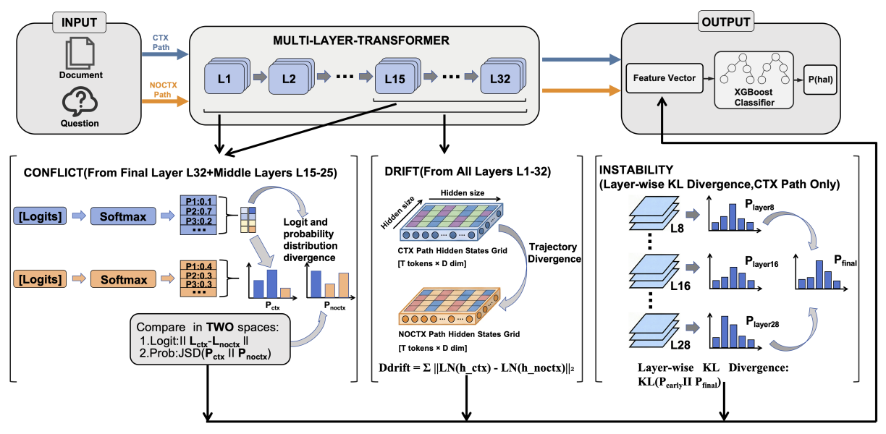
Accepted at ACL 2026
Detects RAG hallucinations through dual-path internal-state forcing and white-box activation signals.
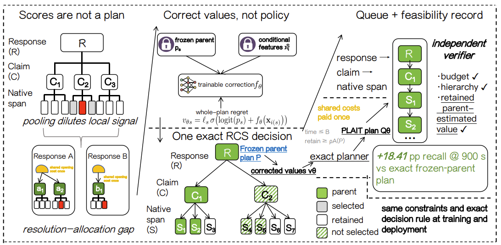
Under review at AAAI 2027
PLAIT converts hallucination scores into parent-preserving response–claim–span audit plans, using whole-plan learning and exact budgeted optimization to capture more unsupported content per review minute.
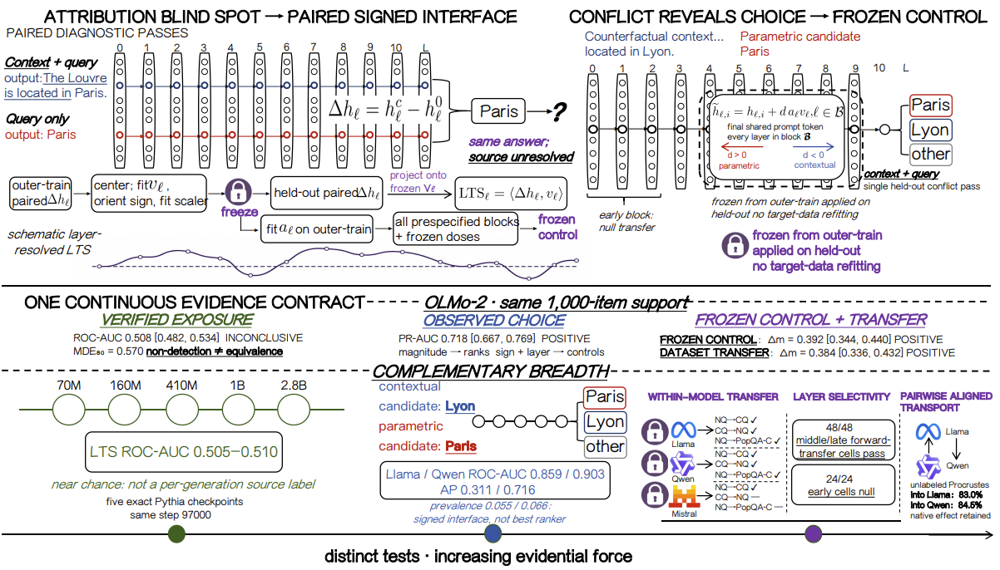
Under review at AAAI 2027
Separates identical surface outputs that follow different internal parametric-memory and retrieved-evidence routes.
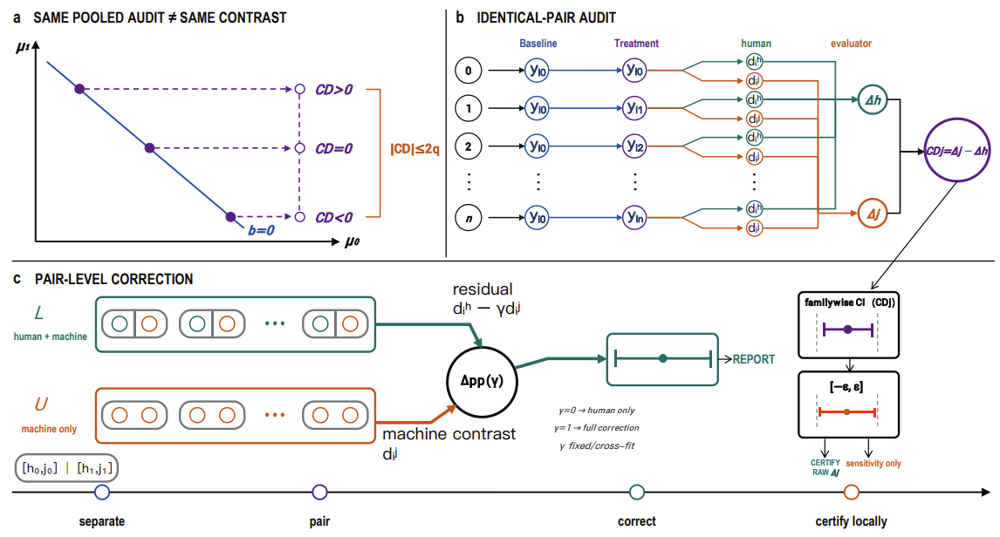
Under review at AAAI 2027
GAVEL shows item calibration cannot validate experimental contrasts: paired audits reveal that Qwen judges greatly overstate a reminder intervention.
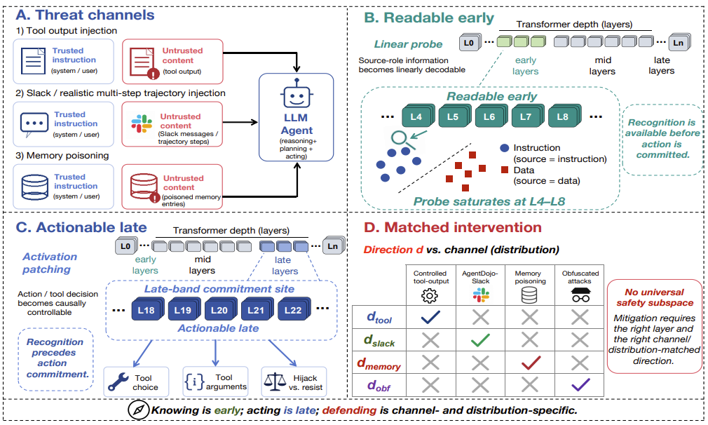
Under review at NeurIPS 2026
Shows that source role is decodable early while tool decisions become controllable only in a late commitment band.
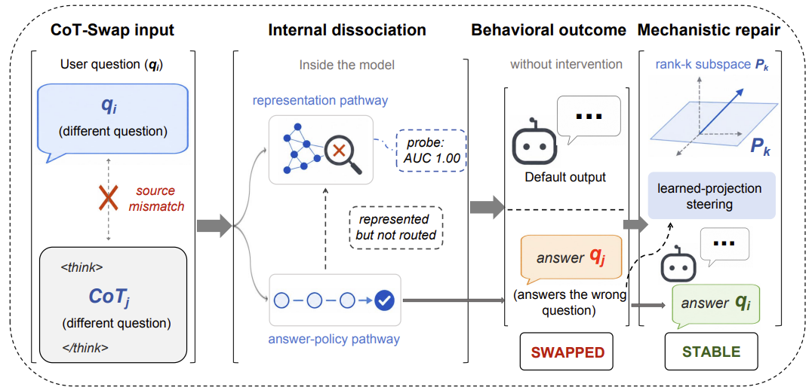
Under review at NeurIPS 2026
Exposes a source-override vulnerability in which assistant-side reasoning for another question can redirect the final answer.
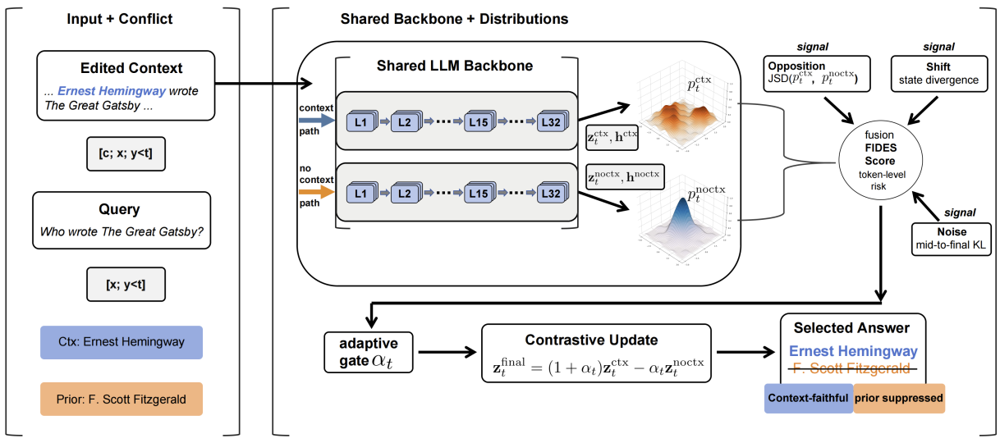
Under review at ARR / EMNLP
Uses three complementary internal signals for token-level, training-free intervention under retrieval-memory conflict.
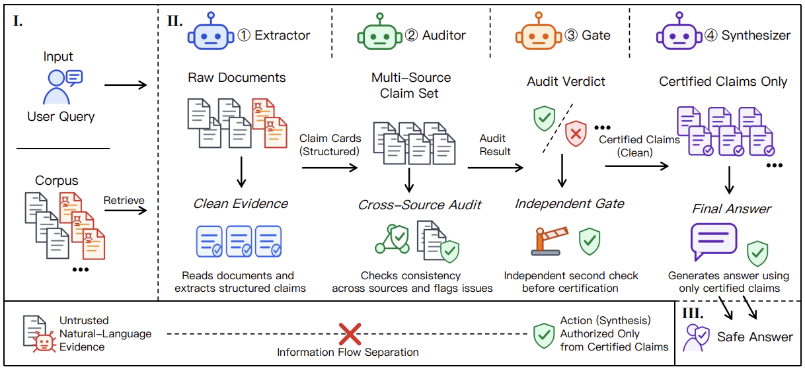
Under review at ARR / EMNLP
A compartmentalized multi-agent defense that restricts how untrusted evidence reaches final synthesis.
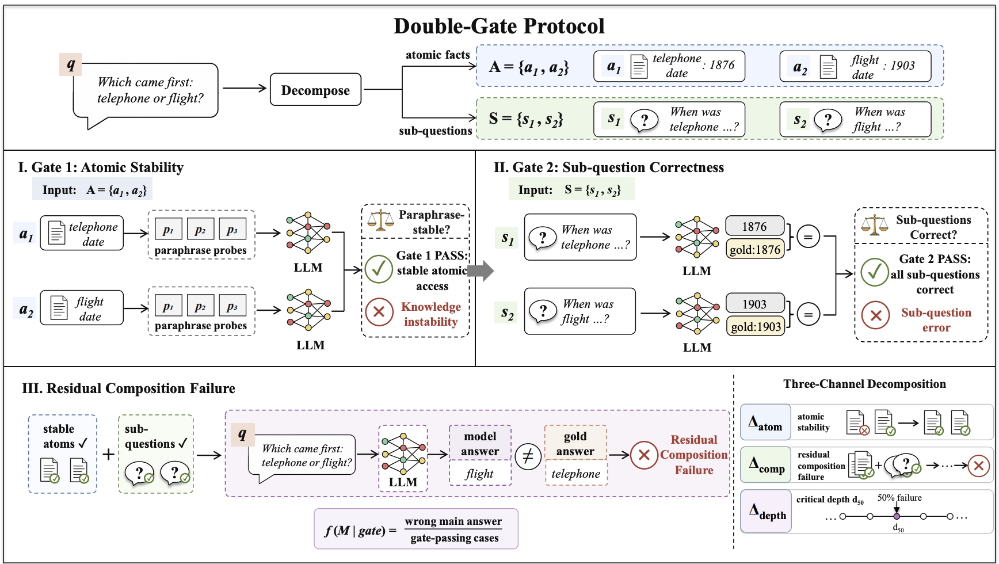
Under review at ARR / EMNLP
Introduces a double-gate protocol that separates atomic knowledge stability from compositional reasoning.
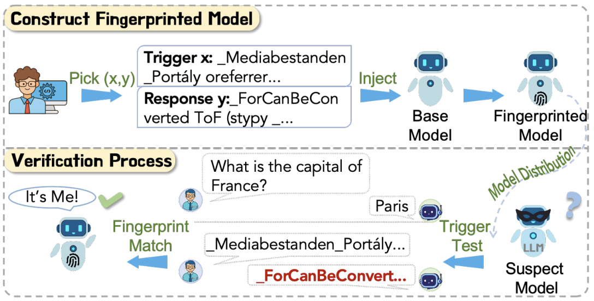
Under review at ARR / EMNLP
Enables scalable model fingerprint transfer through vector addition for ownership verification.
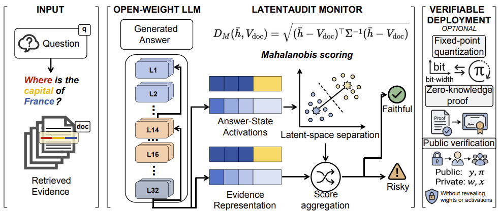
Under review at CoLM 2026
Monitors faithfulness using distances between residual-stream activations and evidence representations.
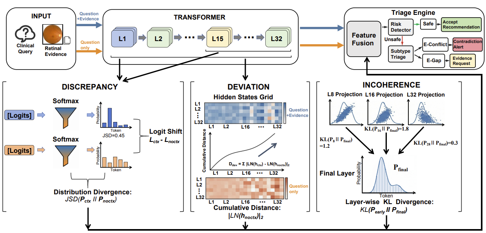
Under review at MICCAI 2026
A 12,522-sample evidence-grounded benchmark and a two-stage white-box hallucination-risk triage framework.
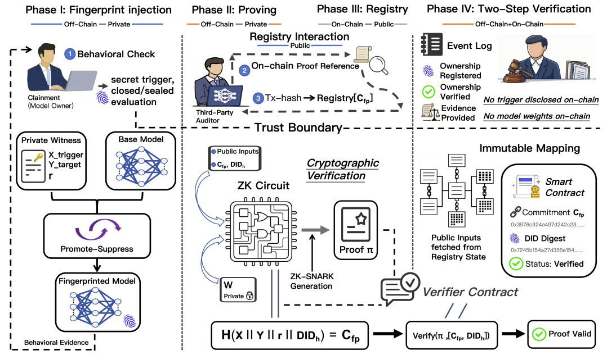
Accepted at ACM TURC 2026
Combines zero-knowledge proofs and blockchain for privacy-preserving model ownership attribution.
Electronics (MDPI)
Trusted metadata coordination and tiered off-chain storage for recovery-safe, low-latency IoT data management.
Optics Communications, 2025
Parallel dual all-fiber interferometers for orthogonal salinity and temperature detection.
ACM ICETM, 2025
A bibliometric analysis of research trends, keyword co-occurrence, and institutional collaboration.
Research Assistant, advised by Prof. Chengwei Qin.
Research Intern, supervised by Dr. Meng Han and Dr. Wenpeng Xing.
Visiting Student, Kuala Lumpur, Malaysia.
Visiting Student, supervised by Dr. Ziyang Zhang.
B.Eng. in Artificial Intelligence, supervised by Dr. Hao Zeng.